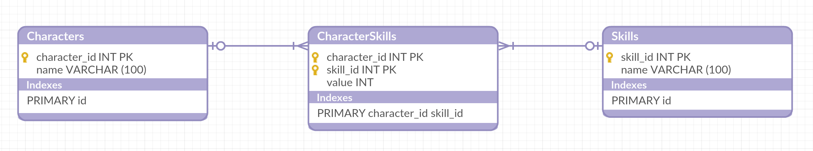
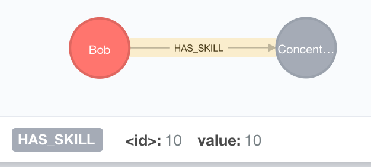

The first database technology that I am going to explore is Neo4J. This is a relative newcomer to the Database Technologies market - having been originally launched only 10 years ago. (Relative to such staples as Oracle, which was already 30 years old at that point!)
What makes Neo4J especially interesting is that it models Relationships, instead of just Data. By this, I mean that there is a concept stored inside the database of the relationship between two records (or Nodes, as they are called in Neo4J). This is very different to the RDBMS world where you have simply got flat tables, and then the concept of Foreign Keys to link them together. Foreign Keys are really nothing more than a promise that this value will also be present in another table, whereas Neo4J Relationships are a concrete realisation of the link between two records. Further to this, Relationships in Neo4J are capable of having data associated with them, in exactly the same way that Nodes are. This makes them first class citizens in the database engine, which is hugely powerful. In an RDBMS, the only way to achieve this is to use a Link Table, which gives rise to a whole host of other problems.
So, what does this look like? Lets take the example of a Roleplaying Game. In our game, we are going to have Characters, and each Character is going to have a set of Skills.
In the RDBMS, we would have a situation like this:  Note the messy link table in the middle. In this case, I've marked the two Foreign Key columns as being a Composite Primary Key, but not all RDBMS systems allow you to do this. If that's not possible then you have to take great care to not have duplicate entries in the join table, which would then mean that the Character has two different values for the same Skill.
What we are actually trying to represent here is the link between Character and Skill having a property on it. Something like this:  No middle table. No need to keep track of foreign keys. No worrying about one end of the relationship being removed and the other one dangling. It all just works cleanly.
Graph Databases in general, and Neo4J in specific, make managing data that is very relationship driven significantly easier than a traditional RDBMS. As we will see, there are costs to this as well as benefits, but ultimately if your data is highly relational then it might well be worth investigating.